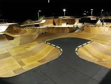

görkorcsolya
görkorcsolya
Ebben a cikksorozatban megtalálja:

| Érvek a görkorcsolya mellett: | |
| A görkorcsolya egy több száz éves múltra visszatekintő sportág, amely a jégkorcsolyából fejlődött ki, feltalálójának egy belga kézművest, Joseph Merlint tekintik. | A görkocsolya fokozza az állóképességet, emellett javítja a koordinációs készséget. A futással szemben alig terheli az ízületeket, így bármilyen korban bátran elkezdhető, természetesen a megfelelő óvintézkedések megtétele mellett. |
| a görkorcsolya használata közben a szervezet fokozottan égeti a zsírt, azaz alkalmas fogyni vágyóknak, emellett jótékonyan hat a keringési rendszerre is |  |